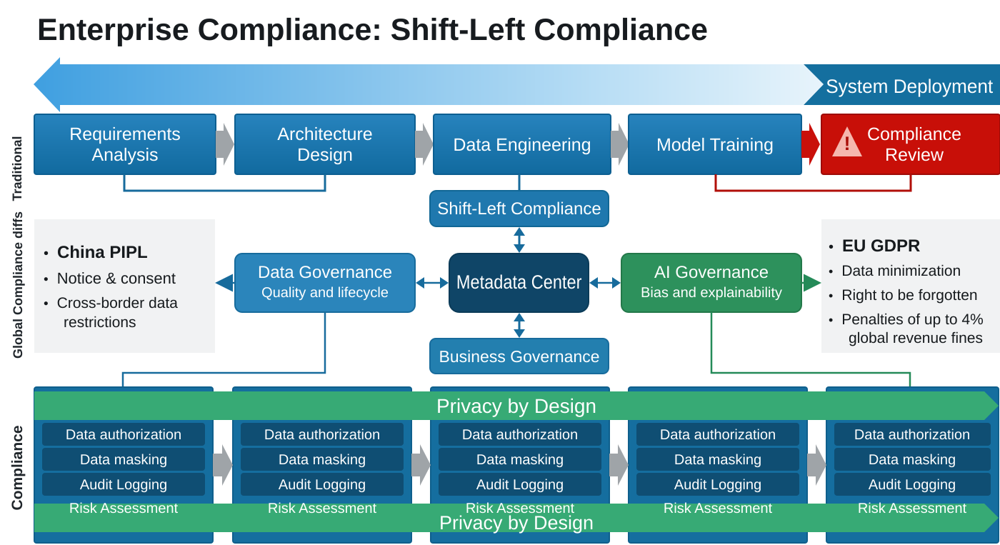
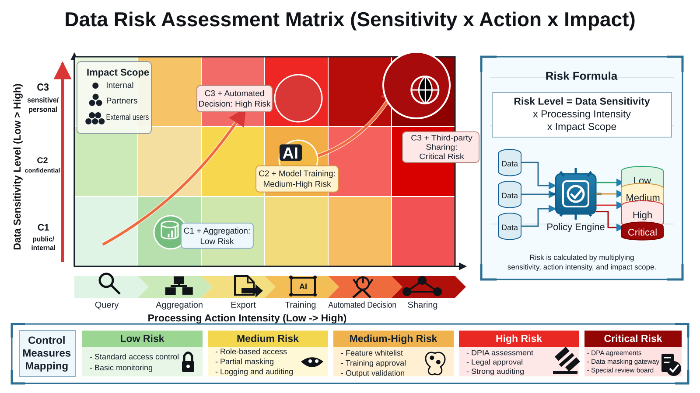
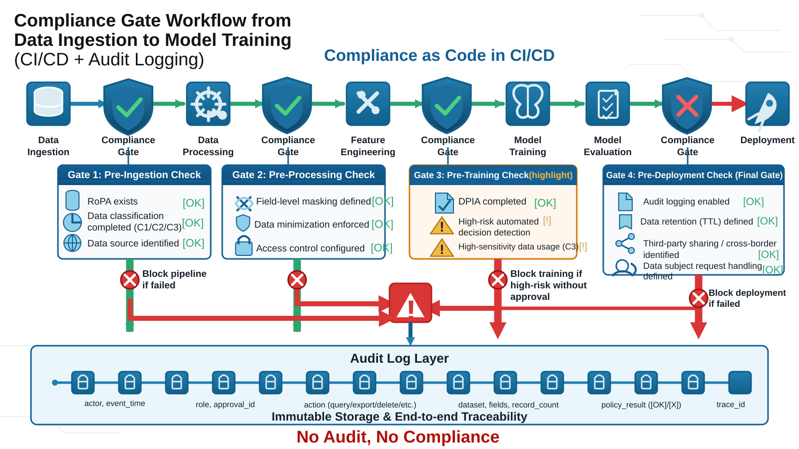
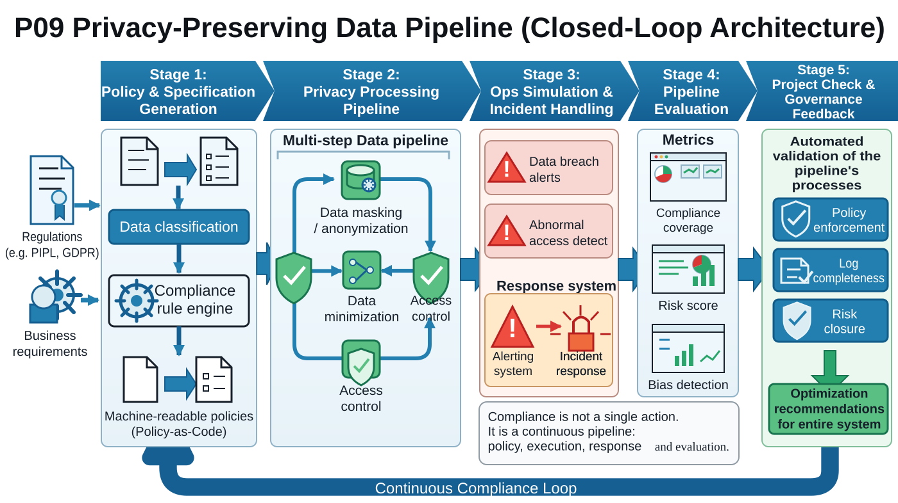
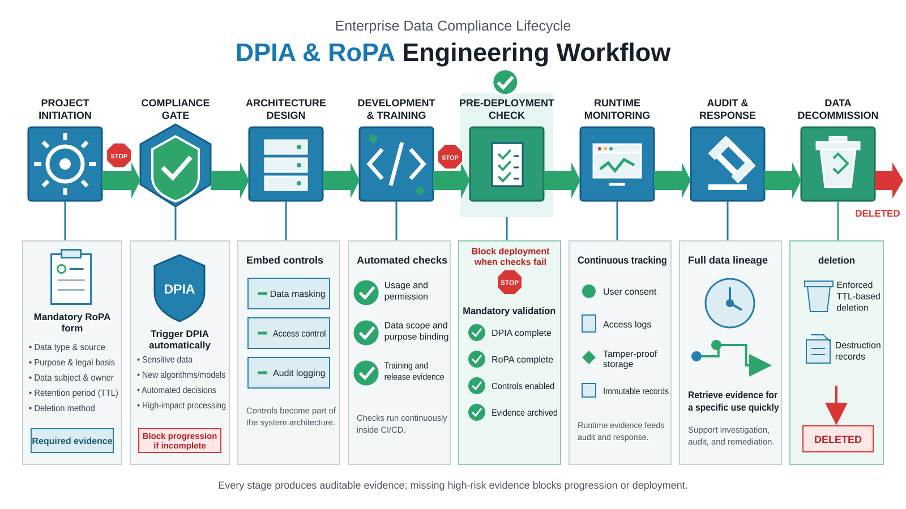
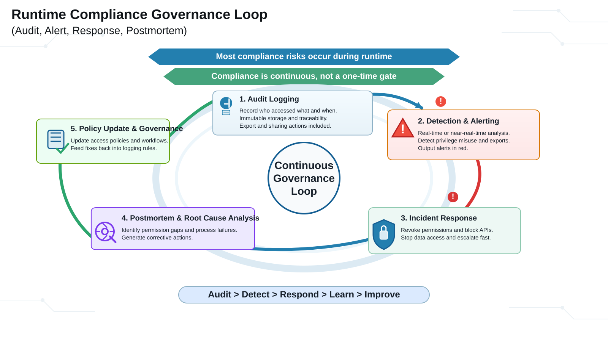
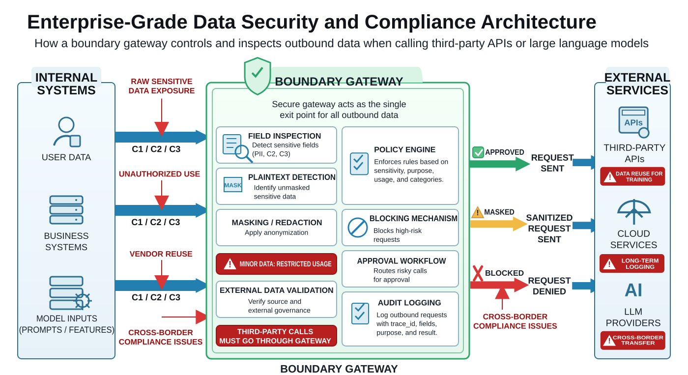
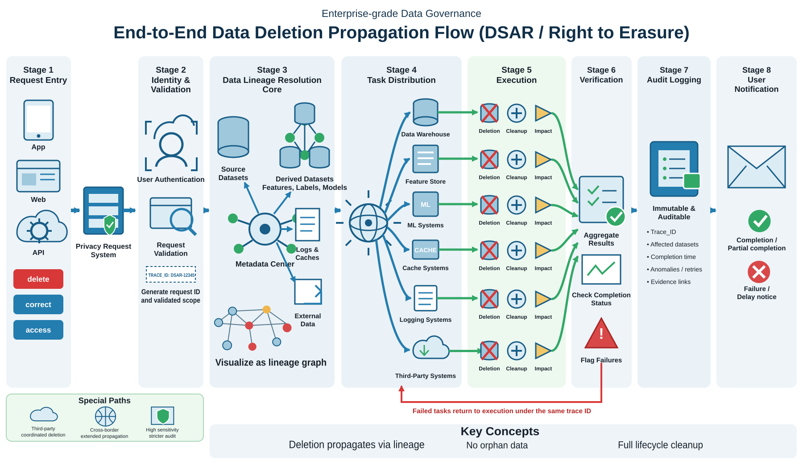

Chapter 36: Data Compliance Frameworks and Governance¶
Chapter Guide¶
- Core goal: answer three practical questions: can this data be used, how may it be used, and can the use be controlled after it begins?
- Design principle: shift compliance and privacy protection left, so they become architecture and process constraints from the beginning (Privacy by Design).
- Implementation support: connect policy, process control, automated audit, and engineering implementation through governance templates, release gates, and a minimum viable governance chain.
Abstract¶
In a data-driven organization, compliance is no longer a stamp that legal teams add immediately before release. It is an infrastructure constraint that determines whether a system can keep operating safely over time. Many projects pass model-quality checks, business conversion targets, and gray-release experiments, yet are stopped at final review because data provenance is unclear, authorization boundaries are vague, audit trails are incomplete, or sensitive information appears in logs. The failure is rarely that teams do not care about compliance. More often, compliance has been treated as an approval attachment after engineering is complete rather than as a constraint that must shape the system from the start.
This chapter is built around one core proposition: the cost and difficulty of compliance remediation rise quickly as a project moves through its lifecycle. Compliance cannot be handled as a one-off legal review. It must be embedded into requirement definition, data modeling, feature development, model training, release approval, audit logging, retention, and deletion. Effective compliance is not “writing documents after something goes wrong”; it is moving risk controls forward before the system gains irreversible momentum.
We build the framework in four layers. First, we explain why compliance is a system constraint rather than an approval appendix, and why Privacy by Design matters in engineering practice. Second, we define data classification, risk assessment, and accountability chains so teams can decide what data exists, who owns it, when it can be used, how it can be used, and who approves that use. Third, we show how RoPA, DPIA, audit trails, and CI/CD preflight checks turn compliance requirements into development workflow. Fourth, we extract a minimum governance chain that connects policy configuration, masking, access control, preflight checks, incident response, and postmortem review into concrete system artifacts.
Unlike discussions that stay at the level of regulatory clauses, this chapter focuses on engineering governance. We discuss how to label data levels in a metadata center, how policy files constrain data entering analytics domains, how pipelines can block high-risk changes before release, how logs and lineage support audit replay, and how to design dedicated controls for health care, finance, minors, delegated processing, third-party APIs, cross-border transfer, and large-model prompts.
Keywords¶
Data compliance frameworks and governance; data compliance; privacy protection; governance framework; risk control
Learning Objectives¶
After studying this chapter, you should be able to:
- Explain why data compliance must move into requirements, architecture, and development rather than remain a passive pre-release approval step.
- Design a data classification scheme that distinguishes low-, medium-, and high-sensitivity data and assigns differentiated controls to each level.
- Build a risk matrix that combines data level, use purpose, processing action, and impact scope into executable risk logic.
- Define accountability boundaries for legal, business, platform, algorithm, data engineering, security, and audit teams.
- Understand how RoPA, DPIA, consent management, audit trails, access approval, retention, and deletion work across the project lifecycle.
- Embed compliance into delivery pipelines so commits, configuration changes, data onboarding, model training, and release approvals can be checked and blocked automatically.
- Design special controls for high-risk scenarios such as health care, finance, minors, third-party processing, external model calls, and cross-border transfer.
- Turn governance requirements into configuration files, policy rules, logs, and inspection scripts that can be executed and audited.
Scenario Introduction¶
A team has spent three months building a user-insight and recommendation system. The business side expects a 20% conversion lift, and the algorithm team is confident in the offline evaluation and gray-release results. At the final review on Friday, however, legal and compliance pause the launch.
The compliance owner asks three questions. First, the system uses precise location and three months of browsing history: is that use consistent with the user authorization? Second, has the data lake test set been masked, and why do some debugging logs still contain plaintext phone numbers? Third, if a user requests account cancellation and exercises the right to deletion, can the training features and derived labels be deleted as well, or can the team only delete the original record in the master table?
The room goes quiet. The business team says it only asked for better recommendations. The algorithm team says the platform provided the data. The platform team says it provided basic permission controls. Legal points out that the system has no complete ledger showing what data is used by whom and for what purpose. The project is delayed, and the team has to rebuild the data-source inventory, cleaning logic, masking path, and approval process.
This is a familiar and expensive pattern: late compliance. Once table structures, feature pipelines, training jobs, and logging systems have already taken shape, adding authorization checks, rebuilding masking, and adding audit traces usually means structural rework, data reprocessing, and cross-team process redesign. The cost is far higher than defining the governance boundary early.
Three simplified failure cases make the pattern clearer.
Case 1: Purpose Drift in a Recommendation System¶
A content recommendation system originally used click behavior to improve ranking. Later, to increase advertising conversion, it added device identifiers, dwell time, transaction records, and location data. The early privacy notice covered only “improving service experience,” not targeted marketing or automated pricing. The system could run technically, but the purpose of processing had drifted. The issue was not simply that more fields were collected; it was that authorization and processing basis did not change when the purpose changed.
Case 2: Masking Failure in Test Environments¶
One team enabled phone hashing and email masking in production, but imported production snapshots directly into test environments to debug incidents. Developers and testers had broad table-read permissions, and request parameters were printed by default. The actual exposure happened not in the official product path, but in test environments and operational logs. The lesson is that policy compliance fails in gray zones when it is not technically enforced.
Case 3: Deletion Requests That Do Not Close the Loop¶
A risk-control model received a user deletion request and removed the user from the source table. It did not propagate deletion to the feature store, training sample set, offline snapshots, model caches, or downstream profile labels. Externally, deletion looked complete; internally, historical copies remained. This shows that data deletion is not table-level deletion. It tests the whole lineage and lifecycle governance capability (Garg et al. 2020).
Core Engineering Pain Points¶
These cases expose four recurring pain points:
- The high cost of late compliance: late discovery creates rework, delays, operational suspension, and potential penalties.
- Unclear accountability: business wants data, algorithms want features, platforms expose capabilities, and legal checks rules, but no one owns the whole loop.
- A gap between policy and technology: documents may look complete while metadata labeling, masking engines, policy checks, access audit, and deletion paths are missing.
- An incomplete lifecycle: collection, processing, use, sharing, retention, and deletion are not verifiable, replayable, or auditable end to end.
36.1 Why Compliance Is a System Constraint, Not an Approval Attachment¶
Traditional development processes place compliance review near the end of delivery. Requirements focus on features, development focuses on effect validation, and legal review arrives before launch. This may work for simple, low-risk systems, but it is increasingly unsafe for modern data-driven systems.
Modern data governance emphasizes Privacy by Design. Its point is not to add one more approval round, but to recognize privacy and compliance as architecture concerns (Cavoukian et al. 2009; Gurses et al. 2011). How databases are layered, where logs are written, whether features are traceable, how training sets are cleaned, and whether a third-party API exports sensitive fields are not problems that can be solved by a last-minute approval form. They must be considered during architecture design (Spiekermann and Cranor 2009; ENISA 2022).
36.1.1 The Cost of Late Compliance¶
Late compliance creates cost in five ways.
First, architecture rework is expensive. If a sensitive field has become a core feature and later turns out to lack legal authorization, table design, feature engineering, model training, and downstream consumers all have to change.
Second, historical data is difficult to recover. Once sensitive data enters training sets, profile systems, caches, and reporting paths, replacing or retraining it is far more expensive than constraining use at the start.
Third, cross-team coordination cost rises sharply. The closer a project is to release, the more teams and dependencies are involved. Remediation then requires business, algorithm, platform, legal, security, test, and operations teams to adjust together.
Fourth, business timing is lost. Many projects can be fixed technically but not quickly enough. A compliance issue discovered before launch can cause the team to miss a market or business window.
Fifth, audit and penalty risk increases. After a system reaches real users, an issue can become an external complaint, regulatory inspection, or public incident rather than an internal correction.
The remediation curve is steep. Removing an unnecessary field during requirements may only change a document. Removing it during training may require rebuilding data and features. Removing it after launch may require rollback, explanation, deletion, compensation, and external communication.
36.1.2 Global Baselines and Regional Differences¶
For cross-region businesses, compliance requirements are not identical. China’s PIPL emphasizes notice and consent, separate consent for sensitive personal information, and restrictions on outbound data transfer. Europe’s GDPR emphasizes data minimization, the right to erasure, data portability, and transparency for automated decision-making. A company cannot assume that one collection logic works everywhere.
Systems therefore need regional rule mapping at the product, data, and model layers. The same user-profile feature may require different legal bases, retention periods, user-rights response paths, and sharing restrictions in different jurisdictions. A mature governance system does not make developers memorize every regulation. It captures differences in templates, policy rules, approval flows, and safe defaults (Zieni et al. 2021; Kosenkov et al. 2026).
36.1.3 The Governance Intersection: Data, Models, and Business¶
Compliance sits at the intersection of data governance, model governance, and business governance.
- Data governance concerns quality, metadata, lineage, lifecycle, and retention.
- Model governance concerns feature provenance, bias risk, interpretability, training boundaries, and model purpose.
- Business governance concerns objectives, user promises, authorization basis, disclosure, and operating rules.
When these are separated, a familiar misalignment appears: the business asks for a new capability, the model quickly connects new features, the platform exposes the interface, but no one judges the compliance of the full data path. A unified metadata center, policy center, and audit center are needed to connect requirements that otherwise sit in different teams.
Figure 36-1 illustrates the corresponding workflow or structure.

{kind=link}
36.1.4 Traditional Flow vs. Shift-Left Governance¶
Table 36-1 summarizes the corresponding comparison and engineering considerations.
Table 36-1: Traditional Flow vs. Shift-Left Governance
| Stage | Traditional Mode | Shift-Left Governance Mode |
|---|---|---|
| Requirements | Focus on business functions; data boundaries are rarely explicit | Define data types, purpose, authorization basis, and output boundaries |
| Architecture | Prioritize availability and performance | Define classification, masking, audit, retention, and deletion mechanisms |
| Data onboarding | Align fields first, explain later | Complete registration, classification, and legality checks before onboarding |
| Feature development | Optimize for model effect | Restrict high-sensitivity fields from directly entering training and analytics |
| Test and gray release | Often use real snapshots | De-identify test data by default; minimize log exposure |
| Release review | Invite legal for temporary review | Approve based on RoPA, DPIA, preflight reports, and audit traces |
| Runtime | Focus mainly on incidents and performance | Also monitor access anomalies, export risks, deletion requests, and incident response |
36.1.5 Default Safety from an Engineering Governance View¶
Mature compliance governance does not rely on everyone always remembering the rules. It builds safe defaults into system behavior. Privacy design strategies emphasize minimization, separation, aggregation, notification, and control as default system mechanisms (Hoepman 2014):
- New datasets have no access by default and require explicit application.
- Sensitive fields are masked by default rather than shown in plaintext until someone remembers to hide them.
- C2/C3 data cannot directly enter external APIs or large-model prompts by default.
- Test environments cannot import plaintext production snapshots by default.
- Data without a registered purpose cannot enter model-training pipelines.
- Missing RoPA, DPIA, or approval records cause CI/CD gates to block by default.
These defaults turn compliance from human reminders into system guardrails.
36.2 Regulatory Mapping, Risk Classification, and Accountability¶
If compliance shift-left explains why governance must move earlier, this section explains what teams must manage after it moves. The answer is three questions:
- What data do we have?
- In which scenarios may this data be used?
- Who is responsible when something goes wrong?
36.2.1 Data Classification Architecture¶
Not all data should be governed with the same intensity. Treating all data as highest sensitivity makes the system rigid and slow. Treating all data loosely exposes sensitive information. Organizations therefore need differentiated classification (Perera et al. 2016; ENISA 2022).
This chapter uses a three-level baseline:
Table 36-2 summarizes the corresponding comparison and engineering considerations.
Table 36-2: Data Classification Architecture
| Security Level | Definition and Examples | Processing Requirements | Masking and Encryption Strategy |
|---|---|---|---|
| L3 high sensitivity (C3) | Sensitive personal information such as biometrics, medical health, precise location; core trade secrets such as unpublished financials | Separate consent; cannot enter analytics domains without masking; legal may veto | Strong storage encryption such as AES-256; full display masking; “usable but not visible” through privacy computing |
| L2 medium sensitivity (C2) | General personal information such as names, phone numbers, device IDs; internal business data | Covered by privacy policy; limited to authorized staff and projects | Transport encryption; storage encryption or hashed de-identification; partial masking |
| L1 low sensitivity (C1) | Public data, fully anonymized data, aggregate statistics | Standard access control; suitable for broad BI analysis and model training | No special controls beyond required storage practice |
The value of classification is not labeling for its own sake. It gives a shared basis for permission policy, masking rules, approval flows, logging requirements, and retention periods. For high-sensitivity analysis, teams may also use differential privacy and privacy-preserving machine learning to reduce inference and leakage risks (Dwork 2008; Shokri and Shmatikov 2015).
36.2.2 Field-, Table-, and Scenario-Level Classification¶
Many teams classify an entire table with a single label, but real systems are more nuanced:
- One table may contain C1, C2, and C3 fields at the same time.
- One field may have different risk in different scenarios.
- One dataset may have different levels in raw, masked, and aggregate forms.
A mature scheme needs at least three dimensions:
Field-level classification: phone number, email, identity number, precise location, bank account, and medical record identifiers need explicit labels.
Table-level classification: user master records, transaction ledgers, behavior logs, risk labels, and customer-service recordings need a baseline level.
Scenario-level classification: model training, customer-service retrieval, BI reporting, and external interface use can change the risk level.
Only by combining these dimensions can the system avoid confusion such as “same table, different fields” and “same field, different purpose.” This is privacy requirements engineering: legal, business, and system specifications must be converted into executable requirements and constraints (Anthonysamy et al. 2017).
36.2.3 Typical Governance Requirements by Level¶
1. L1 Low-Sensitivity Data¶
L1 data usually includes public data, anonymized data, and aggregate statistics, such as public macro indicators or region-level conversion rates with no identifiable individuals. It can circulate more broadly for BI analysis, model tuning, dashboards, and capacity planning. Governance focuses on basic access control, data quality, and reasonable retention.
2. L2 Medium-Sensitivity Data¶
L2 data includes names, phone numbers, email addresses, device IDs, employee IDs, and internal restricted records. It should not be exported freely or exposed in logs, test environments, or external interfaces. Governance focuses on encryption, hashed de-identification, partial masking, least privilege, and purpose limitation.
3. L3 High-Sensitivity Data¶
L3 data includes biometrics, medical health, precise location, financial accounts, and unpublished trade secrets. Leakage can create severe impact, so these data types usually require separate consent, strict approval, isolated storage, strong encryption, and high-standard audit. By default, L3 data should not directly enter general analytics domains or arbitrary downstream consumption.
36.2.4 Risk Assessment Matrix¶
Knowing the data level is not enough. The risk of a field also depends on what it is used for and how it is processed.
For example:
- Using L3 data for automated decision-making is high risk.
- Using L2 data for internal analysis without direct individual impact is medium risk.
- Using L1 data for system-stability monitoring is usually low risk.
Risk assessment should consider:
- Data level: C1 / C2 / C3
- Purpose: service delivery, risk control, recommendation, marketing, audit, research testing
- Processing action: query, export, training, sharing, push, automated decision
- Impact recipient: internal team, partner, external user, cross-border recipient
- Outcome impact: whether the result affects user rights, pricing, profiling, recommendations, credit, or account status
In engineering practice, this can be compressed into executable logic:
Listing 36-1 provides a risk-score formula example.
Listing 36-1: Risk-score formula example
When the data level is high, the action is strong, and the impact scope is broad, the policy engine should require more approvals, stricter masking, and higher audit levels.
36.2.5 Example Risk Matrix¶
Table 36-3 summarizes the corresponding comparison and engineering considerations.
Table 36-3: Example Risk Matrix
| Data Level | Purpose | Processing Action | Risk Level | Default Controls |
|---|---|---|---|---|
| C1 | Stability monitoring | Aggregate query | Low | Standard access control |
| C2 | Internal analysis | Profiling analysis | Medium | Role authorization, partial masking, access trace |
| C2 | Model training | Batch extraction | Medium-high | Feature whitelist, training approval, output review |
| C3 | Automated decision | Training / scoring | High | DPIA, legal approval, strong audit, release blocking |
| C3 | Third-party sharing | Export / API call | Very high | DPA, masking gateway, minimum field set, dedicated assessment |
Figure 36-2 illustrates the corresponding workflow or structure.

{kind=link}
36.2.6 Accountability Chain: RACI Matrix¶
Without a clear accountability chain, even good rules distort during execution. Governance must define who proposes the need, who judges legality, who provides technical controls, who is responsible for compliant use, and who audits execution.
Table 36-4 summarizes the corresponding comparison and engineering considerations.
Table 36-4: Accountability Chain: RACI Matrix
| Role | Main Responsibilities | RACI |
|---|---|---|
| Legal / Compliance | Interpret regulations, define red lines, approve high-risk scenarios | Accountable |
| Business | Explain purpose, necessity, and user commitments | Responsible |
| Platform / Infrastructure | Provide classification, masking, permission, audit, and lineage capabilities | Responsible |
| Algorithm / Data Development | Develop features, train models, and consume data within authorization | Consulted / Informed |
| Security | Review boundary security, audit rules, abnormal access, and export risks | Consulted |
| Audit / Internal Control | Periodically review traces, process execution, and remediation closure | Informed / Consulted |
36.2.7 Common Accountability Mistakes¶
Teams commonly make three mistakes.
Mistake 1: pushing all compliance responsibility to legal. Legal can interpret boundaries, but it cannot replace business purpose definition or platform controls.
Mistake 2: pushing all technical control to the platform. The platform can provide capabilities, but if business and algorithm teams do not declare real purposes, the platform cannot know which uses are unreasonable.
Mistake 3: assuming approval equals compliance. Approval is one checkpoint. The key questions are whether information before approval was complete, whether behavior after approval is verifiable, and whether runtime drift can be detected.
36.2.8 From Policy Text to System Labels¶
Mature teams map the accountability chain into actual system objects:
- business owner -> project owner field
- compliance approver -> approval node and ticket flow
- data owner -> dataset metadata owner
- purpose -> RoPA form field
- use permission -> RBAC / ABAC policy
- risk level -> preflight rule parameter
- access trace -> audit log event
This step matters because compliance becomes automatable only when policy language enters system metadata.
36.3 Project Initiation, Review, and Pre-Release Checks¶
To become part of development, compliance governance must be more than principles. From initiation to retirement, each project should answer six questions:
- Is the processing activity registered?
- Does the processing have a legal basis?
- Which data levels are involved?
- Has risk been assessed?
- Are audit and deletion capabilities available?
- Does the project meet release gates?
36.3.1 Establish RoPA¶
RoPA (Record of Processing Activities) is the master ledger for processing activities. It is not a temporary spreadsheet for audits; it is a systematic registration of data use.
Before a project accesses data, trains a model, or exposes an interface, it should register at least:
- data type and source: first-party, third-party, or public
- purpose and legal basis
- systems, tables, fields, and output recipients
- retention period and destruction mechanism
- sensitive data, third-party sharing, and cross-border transfer
- data owner, project owner, approver, and use team
Without RoPA, a team cannot explain which data was used by whom and for what reason. When a complaint, audit, or deletion request appears, missing ledgers make the path untraceable.
Minimal RoPA Form¶
Table 36-5 summarizes the corresponding comparison and engineering considerations.
Table 36-5: Minimal RoPA Form
| Field | Description |
|---|---|
| project_id | Unique project identifier |
| owner | Project owner |
| system_name | System name |
| data_sources | Data source and table names |
| purpose | Use purpose |
| legal_basis | Legal or authorization basis |
| data_level | Data level |
| retention_days | Retention period |
| third_party_share | Whether data is shared with a third party |
| cross_border | Whether cross-border transfer is involved |
| deletion_path | Deletion path description |
| audit_required | Whether audit is mandatory |
| approval_chain | Approval path |
Engineering Requirements for RoPA¶
In mature platforms, RoPA should not be offline Excel. It should:
- be submitted through system forms and stored with versioning
- link to the project repository, dataset metadata, and approval tickets
- support automatic field- and table-level checks
- integrate with CI/CD and block releases when key information is missing
- preserve historical changes for audit
36.3.2 Conduct DPIA¶
When a project involves medium- or high-sensitivity data, new processing methods, automated decision-making, or high-impact scenarios, RoPA is not enough. It also needs a DPIA (Data Protection Impact Assessment). Systematic DPIA methods connect processing description, risk identification, necessity assessment, and control measures rather than producing a static compliance template (Oetzel and Spiekermann 2014; Notario et al. 2015).
DPIA is not about writing a long report. It asks:
- Is it truly necessary to collect this data?
- Does this data exceed the original authorization scope?
- Could the result significantly affect users?
- Are there risks of discrimination, abuse, boundary-crossing profiling, or misjudgment?
- If leakage, misuse, or unauthorized access occurs, can the system respond and limit damage?
Typical DPIA Steps¶
Step 1: Identify the processing activity. Define data sources, processing purposes, systems, and outputs.
Step 2: Identify risk points. Include over-collection, purpose drift, third-party leakage, model bias, log exposure, and incomplete deletion.
Step 3: Assess necessity and proportionality. Judge whether fields are minimal and whether the processing method matches the business purpose.
Step 4: Design controls. Examples include field reduction, default masking, strong audit, access approval, model interpretability notes, and strengthened deletion paths.
Step 5: Produce an approval conclusion. Clearly state whether the project may launch, may launch after remediation, or must not launch.
DPIA Risk Scoring Example¶
Table 36-6 summarizes the corresponding comparison and engineering considerations.
Table 36-6: DPIA Risk Scoring Example
| Dimension | Score Description |
|---|---|
| Data sensitivity | C1=1, C2=2, C3=3 |
| Use intensity | Query=1, analysis=2, training / automated decision=3 |
| Spread scope | Internal single team=1, multi-team sharing=2, third-party / cross-border=3 |
| Rights impact | No direct impact=1, indirect impact=2, direct impact=3 |
Higher totals require stronger controls. For example, a total score of 8 or above can trigger mandatory legal approval and release blocking.
36.3.3 Minimum Necessity and Field Reduction¶
Many governance failures start because teams collect too much data. The minimum necessity principle asks:
- Is this field truly necessary?
- Can a lower-sensitivity field replace it?
- Can the team use aggregates before details?
- Can the system keep a short window rather than long-term storage?
Engineering implementation includes field whitelists rather than full-table exposure, separation between training feature sets and raw details, time-window trimming, default removal of raw identifiers, and distributing aggregates rather than details.
36.3.4 Consent Management, Authorization Scope, and Purpose Binding¶
Many disputes arise not because data itself is illegal, but because its use exceeds the original notice. Systems must bind authorization to purpose:
- user authorization versions should be traceable
- each purpose should map to a clear processing activity
- purpose changes should trigger reassessment
- broad phrases such as “improve experience” should not cover every business scenario
- sensitive data, high-risk profiling, and automated decisions need stronger authorization and explanation
At the system level, consent management should retain user ID, authorization version, authorization time, purpose scope, withdrawal status, product line, and validity period. GDPR agile case studies also show that privacy requirements must continuously enter user stories, acceptance criteria, and system specifications rather than being added once before release (Miri et al. 2018; Zieni et al. 2021).
36.3.5 Audit Readiness and Compliance Traces¶
Any rule without traces is difficult to prove. Authorization records, approval tickets, access logs, export records, policy hits, preflight results, and deletion outcomes should be stored in tamper-resistant and traceable form.
A mature audit system should record:
- who accessed which data at what time
- which role and approval basis were used
- which fields and how many records were involved
- whether export, download, or sharing occurred
- whether masking, blocking, or alert rules were hit
- whether deletion, correction, or query requests were made for a specific user
- how long those requests took to complete
Audit Log Design Example¶
Table 36-7 summarizes the corresponding comparison and engineering considerations.
Table 36-7: Audit Log Design Example
| Field | Description |
|---|---|
| event_time | Event time |
| actor | Acting subject |
| role | Role used |
| action | Query, export, update, delete, share |
| dataset | Dataset name |
| fields | Involved fields |
| record_count | Number of records |
| purpose | Use purpose |
| approval_id | Approval ticket |
| policy_result | Allow, allow after masking, block |
| trace_id | Trace ID |
36.3.6 Pre-Release Checks: Embedding Compliance into CI/CD¶
The real dividing line is often not whether policies exist, but whether they become automated gates before release. Compliance-as-Code converts controls into machine-executable rules so compliance checks can run continuously in cloud and delivery pipelines (Agarwal et al. 2022).
Typical preflight checks include:
- valid RoPA exists
- required DPIA exists
- data classification is complete
- field-level masking rules exist
- access permissions and role boundaries are configured
- audit log output exists
- retention and destruction mechanisms are defined
- third-party sharing and cross-border transfer are identified
- deletion-request handling path is configured
- test-environment masking check passes
When any high-risk item is missing, the pipeline should block build, deployment, or training-task execution.
Figure 36-3 illustrates the corresponding workflow or structure.

{kind=link}
36.3.7 Governance Pipeline: From Documents to System Execution¶
Once compliance requirements enter engineering, governance objects must become executable pipeline steps. A minimum governance chain usually contains:
- generate privacy specifications and policies
- run the privacy-processing pipeline
- simulate operations and incident handling
- evaluate the privacy pipeline
- run project checks
This chain reflects a key fact: compliance is not a single action. It is a pipeline from policy generation, data processing, alert response, to evaluation and verification.
Figure 36-4 illustrates the corresponding workflow or structure.

{kind=link}
36.3.8 Translating Governance Metrics into Engineering Language¶
Governance metrics matter not because of large sample counts, but because they show whether identification, processing, gates, alerts, and checks form a closed loop. For example:
- 8 raw records and 7 restricted records show that the system identifies and isolates most restricted data in the sample.
- 100% direct PII removal shows that masking covers direct identifiers in the sample.
- 100% preflight pass rate shows that pre-release checks have a defined threshold.
- 100% alert resolution shows that alerts enter closure rather than merely being observed.
- 13 total checks all passing shows that current rules, artifacts, and inspection logic are self-consistent in the sample scope.
The point is not the absolute value. These metrics turn governance from an abstract ideal into inspectable, reviewable, and repeatable system behavior.
Figure 36-5 illustrates the corresponding workflow or structure.

{kind=link}
36.3.9 Example Compliance Release Gate Checklist¶
The following pre-release checklist can be used in project review.
1. Governance and Approval
- [ ] RoPA registration is complete and approved
- [ ] Required DPIA is complete
- [ ] Release approval trace exists
2. Data and Environment Isolation
- [ ] Data classification is complete and field labels are bound
- [ ] Training / analytics sets are isolated from raw sensitive data
- [ ] Test environments contain no plaintext sensitive snapshots
3. Access Control and Audit Traces
- [ ] Logs do not print direct identifiers
- [ ] Role permissions and least-access boundaries are configured
- [ ] Audit logs and abnormal-access alerts are connected
4. Lifecycle and Release Control
- [ ] Retention and destruction mechanisms are configured
- [ ] Full-path deletion request handling is configured
- [ ] Third-party sharing and cross-border transfer risks are identified
- [ ] CI/CD compliance preflight passes
36.3.10 Runtime Governance Is Not an Add-On¶
Many teams do well before release and loosen controls after launch. Real risks often emerge at runtime:
- new team members receive permissions that never converge
- new requirements reuse old approval while the purpose has changed
- third-party API scope gradually expands
- data export, report sharing, and log debugging become new leakage paths
- deletion requests, remediation tasks, and audit inquiries arrive during operation
Runtime governance should therefore include periodic permission review, export audit, new-purpose assessment, abnormal-access detection, deletion-request SLA tracking, incident response, and postmortem mechanisms.
Figure 36-6 illustrates the corresponding workflow or structure.

{kind=link}
36.4 High-Risk Scenario Governance¶
Not every scenario needs the same control strength. Some domains are naturally more sensitive and have more complex accountability boundaries, so they need dedicated controls.
36.4.1 Health Care and Finance¶
Health care and finance share several characteristics: highly sensitive data, high misuse cost, strict regulation, and fragile user trust.
Health Care¶
Health data includes medical records, lab results, health indicators, physiological traits, medication history, and visit records. It is highly sensitive personal information and often links to identity, family, insurance, and financial information.
Health-care systems should control:
- partitioned storage for raw health data and behavior logs
- strong encryption and fine-grained access for sensitive fields
- default exclusion of medical details from general analytics domains
- de-identification and minimum fields before external sharing
- audit logs covering access, export, and sharing
- deletion and correction requests propagated across systems
Finance¶
Financial systems commonly handle bank cards, transaction ledgers, credit records, repayment behavior, device risk labels, and risk scores. Automated decisions may directly affect credit, payment, pricing, or account status. Data protection must therefore be paired with interpretability, fairness, and correction mechanisms.
Dedicated controls include:
- isolating high-sensitivity account data from ordinary behavior logs
- making model input features traceable, explainable, and deletable
- adding human review for high-impact decisions
- connecting risk labels back to evidence
- alerting on abnormal access, export, and batch query behavior
36.4.2 Data About Minors¶
Governance for minors is not one more checkbox. It often requires redesigning processing around protective principles:
- independent guardian consent and withdrawal mechanisms
- stricter data minimization
- prohibition or strict limits on commercial recommendation and deep profiling
- shorter retention periods
- stronger default privacy protection
- notices and explanations that are easier to understand
Engineering implementation can use age-band layering, special labels, and special-purpose restrictions. Once an account is identified as belonging to a minor, certain recommendation, marketing, profiling, and third-party sharing paths should be off by default or require higher-level approval.
36.4.3 External Data and Supply Chain Risk¶
Not all enterprise data is self-produced. Projects often use suppliers, partner datasets, or public sources. The largest risks are often unclear provenance, opaque authorization chains, and inconsistent purpose commitments.
Controls include verifying sources and collection basis, checking whether suppliers have valid authorization and onward authorization, signing DPAs and security clauses, defining responsibility, breach notification, and deletion coordination obligations, and assigning independent labels and purpose restrictions to external data.
36.4.4 Delegated Processing and Third-Party API Risk¶
More organizations send part of their processing to cloud services, external models, or third-party APIs. The risk is that teams treat “calling a service” as a technical integration, while it may actually be data transfer or delegated processing.
Typical risks include:
- plaintext C2/C3 data inside prompts or request bodies
- suppliers using requests for training or secondary processing
- long-term request logs on third-party platforms
- responses returning sensitive information that should not be returned
- service deployment locations conflicting with data-localization requirements
A boundary gateway should automatically perform field detection, plaintext identification, masking replacement, rule-based blocking, request tracing, and high-risk call approval before requests leave the domain.
Figure 36-7 illustrates the corresponding workflow or structure.

{kind=link}
36.4.5 Cross-Border Transfer Governance¶
The difficulty of cross-border transfer is that once data leaves its original jurisdiction, subsequent processing, retention, sharing, and audit become harder to control. Cross-border governance should therefore exist not only in contracts, but also in systems:
- label cross-border transfer paths
- control the minimum field set
- prefer masked or anonymized outputs
- define recipient role, purpose, and retention period
- keep dedicated audit records for cross-border events
- require stricter outbound approval for high-sensitivity data
36.4.6 New Risks in the Large-Model Era: Prompt Compliance¶
In generative AI applications, new boundaries arise from prompts, context assembly, and external knowledge calls. Teams building customer service, retrieval-augmented generation, summarization, or insight systems may accidentally place plaintext phone numbers, identity numbers, medical details, internal tickets, or full transaction information into model context. Studies have shown that large language models may leak or memorize personally identifiable information, so input governance, log governance, and training-data governance need extra attention in generative AI (Carlini et al. 2021; Lukas et al. 2023).
Controls include prompt input whitelists, automatic masking of high-sensitivity fields, context filtering before external model calls, retention control for model logs and sessions, audit sampling for reproducible outputs, and stronger access control for knowledge bases containing personal information.
Privacy-preserving methods for prompt tuning, text generation, and LLM services include input perturbation, privacy-preserving prompt learning, sensitive-content filtering, and server-side isolation (Plant et al. 2022; Li et al. 2023; Kalodanis et al. 2025).
36.4.7 High-Risk Scenario Summary¶
Table 36-8 summarizes the corresponding comparison and engineering considerations.
Table 36-8: High-Risk Scenario Summary
| Scenario | Main Risks | Core Controls |
|---|---|---|
| Health care | Health-data leakage, purpose drift | Independent encryption zone, fine-grained permissions, strong audit |
| Finance | Automated-decision errors, account-data exposure | Traceable features, human review, export audit |
| Minors | Insufficient consent, excessive commercialization | Guardian mechanism, purpose limits, short retention |
| External data | Illegal source, unclear responsibility | Source verification, DPA, purpose binding |
| Third-party APIs | Plaintext leaves domain, log residue | Boundary gateway, masking, call trace |
| Cross-border transfer | Weak control after outbound transfer | Minimum field set, dedicated approval, dedicated audit |
| Large-model prompts | Sensitive information enters context | Prompt filtering, field whitelist, session trace |
36.5 Cases and Governance Templates¶
The previous sections covered principles, methods, and processes. This section gives templates that can be used directly in engineering. Templates turn abstract policy into maintainable, reviewable, and automatically checkable configuration objects.
36.5.1 Governance Toolkit: RoPA Declaration Configuration¶
On the platform side, every data application should submit a compliance configuration file before launch. The CI/CD pipeline can pull and validate it automatically.
Listing 36-2 provides a RoPA declaration template.
# P09-User-Insight-Model RoPA Declaration
project_id: "P09-001"
project_name: "P09-User-Insight-Model"
owner: "algo_team_a"
biz_owner: "growth_recommendation_team"
legal_owner: "compliance_office"
data_usage_purpose: "User behavioral insight and recommendation"
legal_basis: "User Consent (v2.1 Terms of Service)"
processing_activity_type: "model_training_and_internal_analysis"
regions: ["CN"]
contains_sensitive_personal_info: true
requires_dpia: true
third_party_processing: false
cross_border_transfer: false
retention_days: 180
deletion_sla_days: 15
data_categories:
- table: "dwd_user_behavior_log"
level: "C1"
fields:
- "click_event"
- "item_id"
- "timestamp"
purpose: "recommendation_feature_generation"
retention_days: 180
export_allowed: false
- table: "dim_user_profile"
level: "C2"
fields:
- "hashed_phone"
- "age_band"
- "province"
purpose: "feature_enrichment"
retention_days: 365
anonymization_strategy: "K-Anonymity"
export_allowed: false
- table: "user_precise_location"
level: "C3"
fields:
- "lng"
- "lat"
- "geo_hash_12"
purpose: "high_risk_feature_candidate"
retention_days: 30
export_allowed: false
legal_manual_approval_required: true
access_roles:
- role: "algo_reader"
datasets: ["dwd_user_behavior_log", "dim_user_profile"]
action_scope: ["read_masked", "feature_compute"]
- role: "platform_admin"
datasets: ["*"]
action_scope: ["policy_admin", "audit_read"]
- role: "security_auditor"
datasets: ["audit_log"]
action_scope: ["read"]
controls:
audit_log_required: true
lineage_tracking_required: true
pii_scan_required: true
test_env_plaintext_forbidden: true
prompt_plaintext_c2_c3_forbidden: true
pipeline_gate:
block_if_missing_dpia: true
block_if_unapproved_c3_usage: true
block_if_retention_undefined: true
block_if_deletion_path_missing: true
Listing 36-2: RoPA declaration template
Figure 36-8 illustrates the corresponding workflow or structure.

{kind=link}
36.5.2 Data Classification Policy¶
Listing 36-3 provides a JSON data example.
{
"policy_name": "p09_classification_policy",
"version": "1.0.0",
"levels": {
"C1": {
"description": "Public data or fully anonymized data",
"default_controls": ["rbac_basic", "standard_logging"]
},
"C2": {
"description": "General personal information and internal business data",
"default_controls": ["rbac_strict", "masked_display", "encrypted_storage", "audit_required"]
},
"C3": {
"description": "Sensitive personal information and core trade secrets",
"default_controls": ["legal_approval", "strong_encryption", "isolation_zone", "full_audit", "export_block"]
}
},
"field_rules": [
{
"match": ["phone", "mobile", "email", "device_id"],
"level": "C2",
"masking": "partial_mask"
},
{
"match": ["bank_account", "patient_id", "biometric", "precise_location"],
"level": "C3",
"masking": "full_mask"
}
],
"usage_constraints": [
{
"level": "C3",
"forbid": ["external_prompt_plaintext", "test_env_plaintext", "open_export"]
}
]
}
Listing 36-3: JSON data example
36.5.3 Access Control Policy¶
Listing 36-4 provides a YAML configuration example.
policy_id: "p09_access_policy"
version: "1.2.0"
roles:
- name: "algo_reader"
allowed_levels: ["C1", "C2"]
restrictions:
- "cannot_export_raw"
- "cannot_access_c3"
- "must_use_masked_view"
- name: "risk_reviewer"
allowed_levels: ["C1", "C2", "C3"]
restrictions:
- "approval_ticket_required"
- "session_recording_required"
- name: "security_auditor"
allowed_levels: ["audit_only"]
restrictions:
- "read_only"
approval_rules:
- if:
action: "export"
level: "C2"
then:
approvals_required: 2
approvers: ["data_owner", "security_owner"]
- if:
action: "read"
level: "C3"
then:
approvals_required: 2
approvers: ["legal_owner", "platform_owner"]
- if:
action: "external_api_call"
level_includes: ["C2", "C3"]
then:
gateway_scan_required: true
plaintext_forbidden: true
Listing 36-4: YAML configuration example
36.5.4 DPIA Template¶
Listing 36-5 provides a DPIA assessment form template.
# DPIA Assessment Form
## 1. Basic Information
- Project name:
- Project ID:
- Business owner:
- Technical owner:
- Compliance owner:
- Assessment date:
## 2. Processing Activity
- Data sources involved:
- Data fields involved:
- Data level:
- Processing purpose:
- Output recipients:
- Automated decision-making involved:
## 3. Necessity and Proportionality
- Are current fields minimally necessary:
- Are lower-sensitivity replacement fields available:
- Is there over-collection risk:
- Is there purpose-drift risk:
## 4. Risk Identification
- Leakage risk:
- Unauthorized access risk:
- Third-party sharing risk:
- Model bias risk:
- Incomplete deletion risk:
- Log exposure risk:
## 5. Controls
- Field reduction:
- Default masking:
- Approval mechanism:
- Audit traces:
- Test-environment isolation:
- External-call gateway:
## 6. Assessment Conclusion
- [ ] May launch
- [ ] May launch after remediation
- [ ] Must not launch
## 7. Remediation Items and Owners
| Remediation Item | Owner | Due Date | Status |
| :--- | :--- | :--- | :--- |
| | | | |
Listing 36-5: DPIA assessment form template
36.5.5 Audit Log Structure¶
Listing 36-6 provides an audit-log JSON example.
{"event_time":"2026-03-10T10:15:01Z","actor":"algo_user_a","role":"algo_reader","action":"query","dataset":"dim_user_profile_masked","fields":["hashed_phone","age_band"],"record_count":200,"purpose":"feature_validation","approval_id":"APR-1029","policy_result":"allow_masked","trace_id":"trace-001"}
{"event_time":"2026-03-10T10:22:48Z","actor":"platform_job_17","role":"pipeline_runner","action":"preflight_check","dataset":"p09_release_bundle","fields":[],"record_count":0,"purpose":"deployment_gate","approval_id":"N/A","policy_result":"pass","trace_id":"trace-002"}
{"event_time":"2026-03-10T10:29:11Z","actor":"external_gateway","role":"api_gateway","action":"external_api_call","dataset":"prompt_payload","fields":["masked_phone","case_summary"],"record_count":1,"purpose":"assisted_summary","approval_id":"APR-1081","policy_result":"allow_after_redaction","trace_id":"trace-003"}
{"event_time":"2026-03-10T10:33:56Z","actor":"ops_user_b","role":"ops_admin","action":"export","dataset":"user_precise_location","fields":["geo_hash_12"],"record_count":50,"purpose":"troubleshooting","approval_id":"APR-1099","policy_result":"blocked","trace_id":"trace-004"}
Listing 36-6: Audit-log JSON example
36.5.6 Preflight Checklist¶
Listing 36-7 provides a preflight-checklist JSON example.
{
"project_id": "P09-001",
"preflight_version": "1.0.0",
"checks": [
{"name": "ropa_exists", "status": "PASS"},
{"name": "classification_policy_exists", "status": "PASS"},
{"name": "access_policy_exists", "status": "PASS"},
{"name": "pii_rules_loaded", "status": "PASS"},
{"name": "restricted_records_quarantined", "status": "PASS"},
{"name": "redacted_records_remove_direct_pii", "status": "PASS"},
{"name": "audit_log_enabled", "status": "PASS"},
{"name": "incident_simulation_exists", "status": "PASS"},
{"name": "postmortem_template_exists", "status": "PASS"},
{"name": "deletion_path_declared", "status": "PASS"},
{"name": "external_prompt_plaintext_block", "status": "PASS"},
{"name": "cross_border_flag_reviewed", "status": "PASS"},
{"name": "release_gate", "status": "PASS"}
],
"overall_status": "PASS"
}
Listing 36-7: Preflight-checklist JSON example
36.5.7 Incident Response and Postmortem Template¶
Listing 36-8 provides a privacy incident postmortem template.
# Privacy Incident Postmortem
## 1. Event Overview
- Event ID:
- Discovery time:
- End time:
- Impact scope:
- Event severity:
## 2. Trigger Cause
- Direct cause:
- Root cause:
- Process gap involved:
- Permission configuration error involved:
## 3. Impact Analysis
- Datasets involved:
- Fields involved:
- Records involved:
- External leakage:
- User-rights impact:
## 4. Handling Process
- Alert timeline:
- Blocking action:
- Temporary mitigation:
- Permanent fix:
## 5. Responsibility and Improvement
| Issue | Responsible Team | Improvement | Completion Time |
| :--- | :--- | :--- | :--- |
| | | | |
## 6. Follow-up Checks
- [ ] Policies updated
- [ ] Permissions converged
- [ ] Audit rules supplemented
- [ ] Documentation updated
- [ ] Related projects checked
Listing 36-8: Privacy incident postmortem template
36.5.8 Governance Deliverable Mapping¶
Governance templates are not paper designs. Table 36-9 maps common deliverables in a privacy-governance pipeline to the governance capabilities they represent.
Table 36-9 summarizes the corresponding comparison and engineering considerations.
Table 36-9: Governance Deliverable Mapping
| Deliverable | Governance Meaning |
|---|---|
compliance_scope.json |
Defines compliance scope |
classification_policy.json |
Defines classification policy |
access_policy.json |
Defines access and permission boundaries |
privacy_tech_options.json |
Defines privacy technology options |
raw_sensitive_records.jsonl |
Raw sensitive samples |
classified_records.jsonl |
Classification results |
redacted_records.jsonl |
Masked results |
quarantine_records.jsonl |
Quarantined results |
audit_log.jsonl |
Audit traces |
access_alerts.jsonl |
Abnormal-access alerts |
isolation_plan.json |
Isolation strategy |
preflight_checklist.json |
Pre-release gate checks |
incident_simulation.json |
Incident simulation |
postmortem_report.json |
Incident postmortem |
p9_metrics.json |
Metric summary |
p9_test_results.json |
Check results |
p9_test_report.md |
Test report |
36.5.9 From Templates to Platforms¶
Few organizations can build a complete governance platform in one step. A practical evolution path is:
Stage 1: Template-based governance. Standardize RoPA templates, DPIA templates, classification standards, and release checklists.
Stage 2: Configuration-based governance. Convert templates into YAML/JSON policies and manage them in version-controlled repositories.
Stage 3: Automated governance. Use CI/CD, data gateways, log systems, and audit platforms for automatic checks, blocking, and alerts.
Stage 4: Platform governance. Unify metadata, permissions, policies, approval, traces, and incident response in one governance platform for global visibility and cross-project reuse.
36.6 The Minimum Governance Chain¶
The previous sections introduced frameworks, gates, and deliverables. This section extracts a reusable minimum governance chain that shows how compliance requirements connect inside a system.
36.6.1 Specification and Scope Definition¶
The governance chain starts not with processing scripts, but with structured definitions of scope, classification, access boundaries, and privacy-technology options. Use purpose, data level, role boundaries, and available technologies as the executable basis for later processing.
This step asks how sensitive data is identified, restricted, rewritten, audited, and verified before it enters training or analysis systems. It determines whether later pipelines are executing rules or merely repairing damage after the fact.
36.6.2 Classification, Masking, and Isolation¶
After raw sensitive records enter the system, they must be classified and then masked, quarantined, or blocked according to policy. The key is not rewriting a few fields; it is moving data from raw-visible state into controlled-usable state while preserving the evidence needed for later audit.
This stage should answer:
- How does the system identify direct PII?
- Which records are restricted?
- Which fields may remain for analysis, and which must be removed?
- Which data may enter only an isolation zone, not a general processing zone?
36.6.3 Audit, Alerts, and Gates¶
Governance cannot stop at offline processing. The system must record access, emit alerts, run preflight checks, and connect anomalies to incident response and postmortems.
This stage explains system behavior through audit-log output, abnormal-access alerts, preflight validation, incident simulation, and postmortem review. Without these capabilities, governance cannot support release approval, anomaly tracing, or retrospective audit.
36.6.4 Metrics and Acceptance¶
Governance metrics confirm whether the loop works. The following metrics correspond to identification, processing, release, and audit capabilities:
- 13 total checks
- all checks pass
- command-level checks and data / artifact-level checks are both covered
If these metrics can be generated reliably and continue to pass, governance has moved from document requirements into runnable inspection logic.
36.6.5 Division of Labor with Project Chapters¶
This governance chapter focuses on frameworks, templates, gates, and acceptance logic. Project chapters are better suited for script organization, data directories, run interfaces, and extension paths. This division keeps governance portable across business systems while preserving implementation detail in project chapters.
A project pipeline such as P09 is better expanded in a dedicated project chapter. In this chapter, it serves as a lightweight example of governance templates after implementation.
36.7 From Compliance Frameworks to Organizational Capability¶
The hardest part of governance is not writing a polished framework. It is sustaining cross-team execution. The following recommendations focus on organizational implementation.
36.7.1 Do Not Try to Build Everything at Once¶
For most teams, the realistic path is not immediate platformization. Start with several key control points:
- standardize classification
- standardize RoPA and DPIA templates
- store policy files in repositories
- connect key checks to CI/CD
- gradually build unified audit and metadata platforms
36.7.2 Start with High-Value Defaults¶
When resources are limited, ship the default rules whose absence creates obvious risk:
- logs must not print direct PII
- test environments must not import plaintext production snapshots
- C3 data is not directly exportable by default
- high-risk purposes must be registered before use
- external model calls must pass through a masking gateway
These defaults create immediate guardrails and reduce low-level incidents.
36.7.3 Translate Compliance Language into Engineering Language¶
Business, legal, platform, and algorithm teams often fail to communicate because they use different languages:
- legal says legal basis, consent, proportionality
- business says goals, conversion, efficiency
- platform says permissions, tables, interfaces, logs
- algorithms say features, training, inference, effect
Governance creates a translation layer. Legal basis becomes a RoPA field. Minimum necessity becomes a field whitelist. Right to deletion becomes a deletion path. Audit requirements become a log schema. High-risk processing becomes a preflight blocking rule.
36.7.4 Share One Source of Truth Across Audit and Development¶
In many organizations, auditors read one ledger while developers run another system. The two eventually diverge. A better approach is to let audit, compliance, and engineering share the same structured source of truth: metadata, policy versions, approval records, and log chain. This reduces the gap between external reporting and internal execution.
36.7.5 Govern with Metrics, Not Slogans¶
Governance effectiveness is measured by metrics. A useful system may include:
- valid RoPA coverage
- DPIA completion rate
- sensitive-field labeling coverage
- test-environment masking coverage
- audit-log completeness
- deletion-request on-time completion rate
- abnormal-export alert closure rate
- preflight block hit rate
- runtime permission convergence rate
Once metrics exist, governance becomes a managed object rather than an initiative.
36.9 Further Thinking¶
- In generative AI applications, what is the biggest difference between prompt compliance and traditional data masking?
- Why does the right to deletion test full lineage and lifecycle governance rather than single-table deletion?
- If an organization cannot build a full governance platform in the short term, which default guardrails should launch first?
- When business goals conflict with compliance requirements, how can minimum necessity and replacement fields help find a workable compromise?
- For cross-border, multi-region, and multi-product businesses, how can governance remain unified while allowing differentiated local rules?
Chapter Summary¶
This chapter argued that the cost of data compliance rises rapidly as a project moves through its lifecycle. Teams must therefore insist on compliance shift-left and Privacy by Design, moving governance constraints into requirements, architecture, and development rather than treating them as a pre-release approval attachment. Around this core idea, the chapter first established a three-layer data classification system and expanded it from field level, to table level, to scenario level. It then built a risk assessment matrix based on "data sensitivity x processing intensity x business impact scope" and used RACI to clarify the accountability chain across legal, business, platform, algorithm, security, and audit teams.
At the process level, the chapter connected RoPA records of processing activities, DPIA impact assessment, the minimum-necessity principle, consent and purpose binding, audit traces, and CI/CD compliance prechecks into a gate loop from project initiation to retirement. It also gave specialized controls for high-risk scenarios such as health care, finance, minors' data, externally acquired data, third-party APIs, cross-border transfer, and large-model prompts. Finally, through configurable deliverables such as RoPA declarations, classification policies, access policies, DPIA templates, audit logs, and preflight checklists, the chapter showed how policy text can become system behavior that is checkable, blockable, and reviewable, and it outlined an evolution path from templates to platforms.
References¶
Garg S, Goldwasser S, Vasudevan P N (2020) Formalizing Data Deletion in the Context of the Right to Be Forgotten. In Advances in Cryptology - EUROCRYPT 2020, Springer International Publishing, pp 373-402.
Cavoukian A, others (2009) Privacy by Design: The 7 Foundational Principles. Information and Privacy Commissioner of Ontario, Canada, 5(2009), 12.
Gurses S F, Troncoso C, Diaz C (2011) Engineering Privacy. Technical report.
Spiekermann S, Cranor L F (2009) Engineering Privacy. IEEE Transactions on Software Engineering, 35(1), 67-82. https://doi.org/10.1109/tse.2008.88.
European Union Agency for Cybersecurity (ENISA) (2022) Data Protection Engineering. ENISA Report.
Zieni B, Spagnuelo D, Heckel R (2021) Transparency by Default: GDPR Patterns for Agile Development. In Electronic Government and the Information Systems Perspective, Springer International Publishing, pp 89-102.
Kosenkov O, Zabardast E, Fucci D, Mendez D, Unterkalmsteiner M (2026) Privacy by Design: Aligning GDPR and Software Engineering Specifications with a Requirements Engineering Approach. Information and Software Technology, 190, 107946. https://doi.org/10.1016/j.infsof.2025.107946.
Hoepman J-H (2014) Privacy Design Strategies. In IFIP International Information Security Conference, pp 446-459. https://doi.org/10.1007/978-3-642-55415-5_38.
Perera C, Liu C, Ranjan R, Wang L, Zomaya A Y (2016) Privacy-Knowledge Modeling for the Internet of Things: A Look Back. Computer, 49(12), 60-68.
Dwork C (2008) Differential Privacy: A Survey of Results. In Theory and Applications of Models of Computation, Springer Berlin Heidelberg, pp 1-19. https://doi.org/10.1007/978-3-540-79228-4_1.
Shokri R, Shmatikov V (2015) Privacy-Preserving Deep Learning. In 2015 53rd Annual Allerton Conference on Communication, Control, and Computing (Allerton), pp 909-910.
Anthonysamy P, Rashid A, Chitchyan R (2017) Privacy Requirements: Present & Future. In 2017 IEEE/ACM 39th International Conference on Software Engineering: Software Engineering in Society Track (ICSE-SEIS), pp 13-22. https://doi.org/10.1109/icse-seis.2017.3.
Oetzel M C, Spiekermann S (2014) A Systematic Methodology for Privacy Impact Assessments: A Design Science Approach. European Journal of Information Systems, 23(2), 126-150. https://doi.org/10.1057/ejis.2013.18.
Notario N, Crespo A, Martin Y-S, del Alamo J M, Le Metayer D, Antignac T, Kung A, Kroener I, Wright D (2015) PRIPARE: Integrating Privacy Best Practices into a Privacy Engineering Methodology. In 2015 IEEE Security and Privacy Workshops, pp 151-158.
Miri M, Foomany F H, Mohammed N (2018) Complying with GDPR: An Agile Case Study. ISACA Journal, 2, 1-7.
Agarwal V, Butler C, Degenaro L, Kumar A, Sailer A, Steinder G (2022) Compliance-as-Code for Cybersecurity Automation in Hybrid Cloud. In 2022 IEEE 15th International Conference on Cloud Computing (CLOUD), pp 427-437.
Carlini N, Tramer F, Wallace E, Jagielski M, Herbert-Voss A, Lee K, Roberts A, Brown T, Song D, Erlingsson U, Oprea A, Raffel C (2021) Extracting Training Data from Large Language Models. In 30th USENIX Security Symposium (USENIX Security 21), pp 2633-2650.
Lukas N, Salem A, Sim R, Tople S, Wutschitz L, Zanella-Beguelin S (2023) Analyzing Leakage of Personally Identifiable Information in Language Models. In 2023 IEEE Symposium on Security and Privacy (SP), pp 346-363. https://doi.org/10.1109/sp46215.2023.10179300.
Plant R, Giuffrida V, Gkatzia D (2022) You Are What You Write: Preserving Privacy in the Era of Large Language Models. arXiv preprint arXiv:2204.09391.
Li Y, Tan Z, Liu Y (2023) Privacy-Preserving Prompt Tuning for Large Language Model Services. arXiv preprint arXiv:2305.06212.
Kalodanis K, Papadopoulos S, Feretzakis G, Rizomiliotis P, Anagnostopoulos D (2025) SecureLLM: A Unified Framework for Privacy-Focused Large Language Models. Applied Sciences, 15(8), 4180.